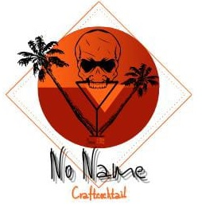
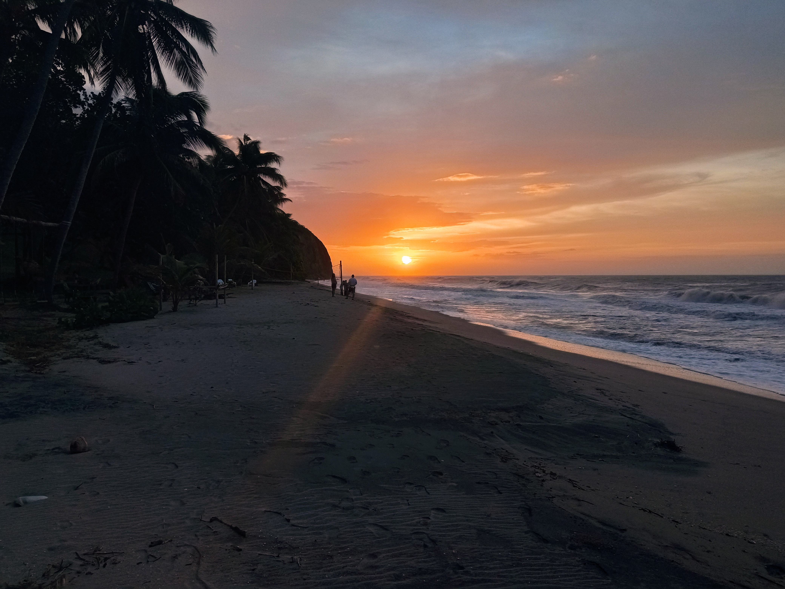
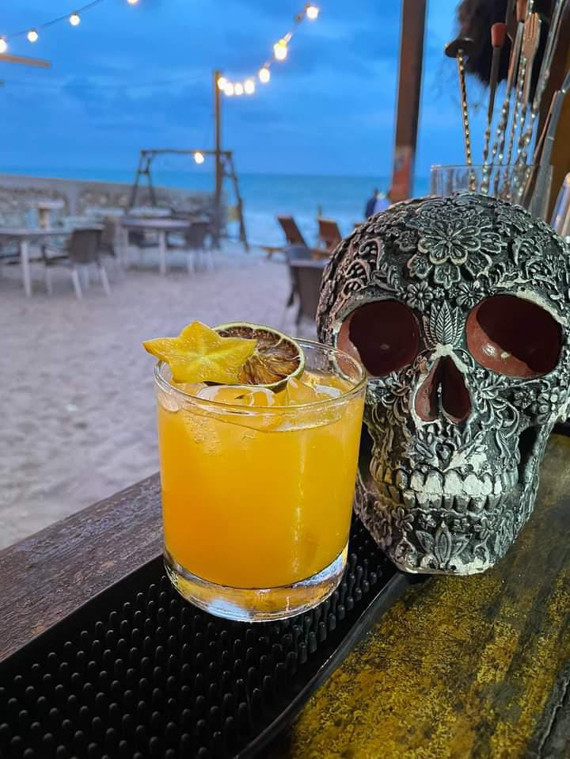
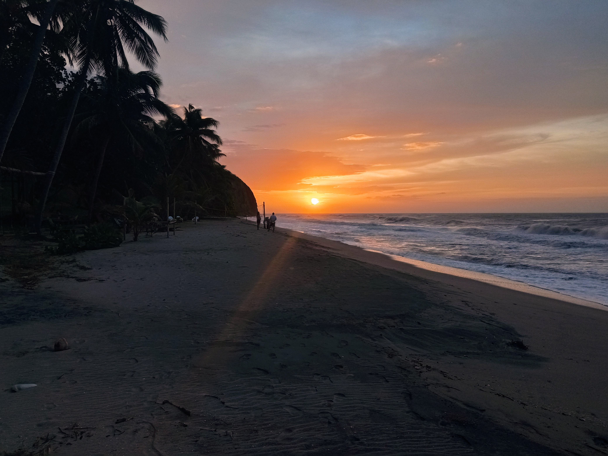
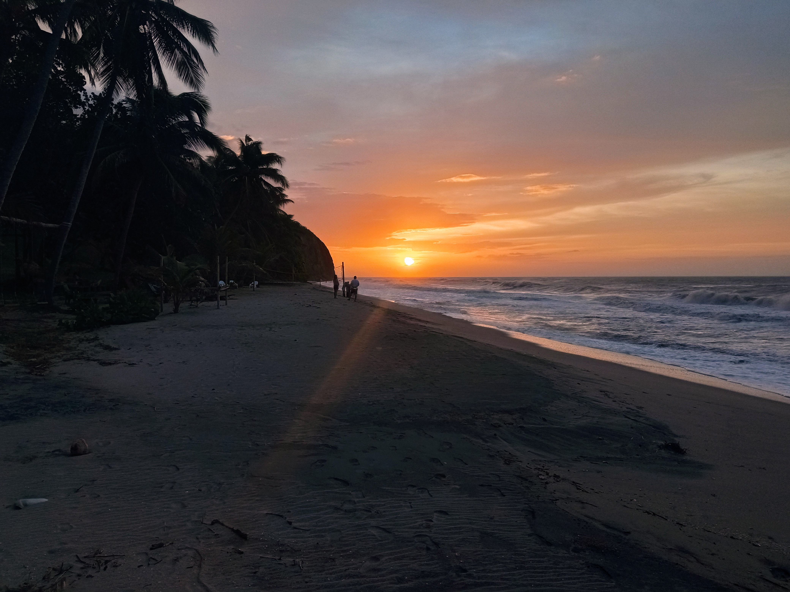
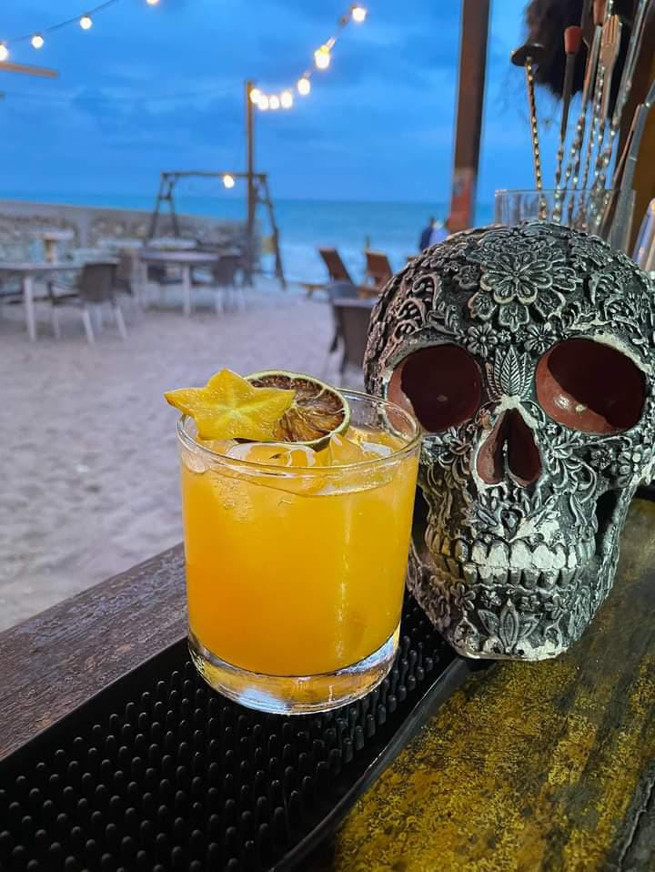
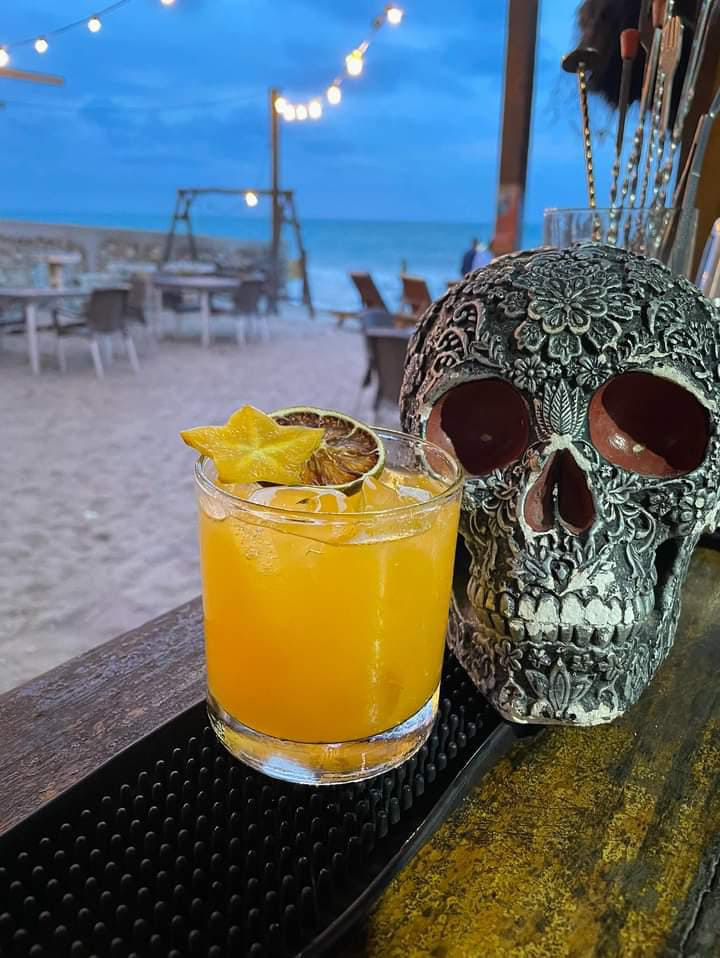

Somos un bar que abrio sus puertas en el 2017 por migrantes
venezolanos que escaparon de la crisis economica en venezuela.
Llegamos a palomino y nos cautivo su atractiva playa su combinacion
de mar y montaña su clima tropical y sus humedas montañas llenas de
fauna animal, y muy cerca a la Sierra Nevada de Santa Marta con sus
nevados prominentes. Su combinacion de culturas traidas por personas
de todos los paises que se han quedado por su majestuosa belleza.



¿Busca un ambiente relajado en la playa, acompañado de fantásticas vistas
al mar, excelente cocina nacional y cócteles preparados por expertos?
Glamurosos o clubes en un ambiente bohemio en las playas de Palomino con
solo un boleto, ¡y las playas de fiesta son tu destino!
Bar No Name está ubicado entre el departamento de Santa Marta y La
Guajira, es un lugar con playas y aguas transparentes, ideal para pasar un
día de rumba playera, donde turistas y locales salen a disfrutar y a
relajarse por completo. Es el protagonista y encargado de brindar a los
turistas la mejor rumba y comida de Santa Marta a un precio justo.
 

 
